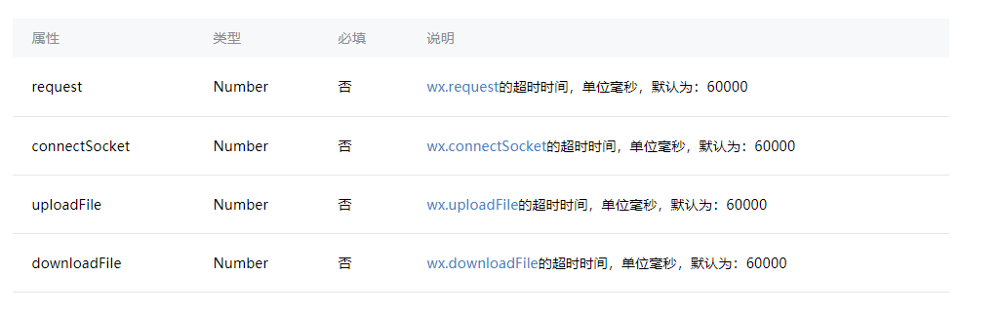

摘要：记录这个一是帮助更多从零开始的开发小白可以通俗易懂的了解小程序开发，另外一个目的就是对小程序开发从零开始总结梳理一下，帮助别人的同时提升自己。（ps - 在总结中成长，不论是任何行业都适用的一句真言。）
微信小程序
框架部分
目录结构
pages
index
- index.wxml
- index.wxss
- index.js
logs
app.js
app.json
app.wxss
配置
app.json
pages
接受一个数组，每一项都是字符串，来指定小程序由哪些页面组成。每一项代表对应页面的【路径+文件名】信息，数组的第一项代表小程序的初始页面。小程序中新增/减少页面，都需要对 pages 数组进行修改。
1
2
3
4
5
6{
"pages":[
"pages/index/index",
"pages/logs/logs"
]
}window

1
2
3
4
5
6
7
8
9
10
11{
"window":{
"navigationBarBackgroundColor": "#ffffff",
"navigationBarTextStyle": "black",
"navigationBarTitleText": "微信接口功能演示",
"backgroundColor": "#eeeeee",
"backgroundTextStyle": "light",
"navigationStyle": "custom",
"enablePullDownRefresh": false
}
}- tabBar
如果小程序是一个多 tab 应用（客户端窗口的底部或顶部有 tab 栏可以切换页面），可以通过 tabBar 配置项指定 tab 栏的表现，以及 tab 切换时显示的对应页面。
注意：当设置 position 为 top 时，将不会显示 icon，list是一个数组，该数组最少配置2个tab，最多5个tab，tab按照数组的顺序进行排列。
1
2
3
4
5
6
7
8
9
10
11
12
13
14
15
16
17{
"tabBar":{
"position":"bottom",
"borderStyle":"black",
"color":"#FFF",
"selectedColor":"#333",
"list":[
{
"text":"首页",
"pagePath":"pages/index/index",
"iconPath":"/static/images/index.png",
"selectedIconPath":"/static/images/index.png"
},
],
"backgroundColor":"#efefef"
}
}- networkTimeout
可以设置各种网络请求的超时时间。

1
2
3
4
5
6
7
8{
"networkTimeout":{
"request": 6000,
"connectSocket": 6000,
"uploadFile": 6000,
"downloadFile": 6000,
}
}- tabBar
page.json 每一个小程序页面也可以使用.json文件来对本页面的窗口表现进行配置。 页面的配置比app.json全局配置简单得多，只是设置 app.json 中的 window 配置项的内容，页面中配置项会覆盖 app.json 的 window 中相同的配置项。
1
2
3
4
5
6
7
8
9
10{
"navigationBarBackgroundColor": "#ffffff",
"navigationBarTextStyle": "black",
"navigationBarTitleText": "微信接口功能演示",
"backgroundColor": "#eeeeee",
"backgroundTextStyle": "light",
"enablePullDownRefresh": false,
"disableScroll": false,//true 设置页面整体不能上下滚动，仅设置在page.json
"onReachBottomDistance": 50
}
框架
逻辑层
注册程序
APP()函数用来注册一个小程序。接收一个object参数。
1 | App({ |
场景值
|场景值|说明|
|:-------:|:---:|
|1001|发现栏小程序主入口|
|1005|顶部搜索框的搜索结果页|
|1006|发现栏小程序主入口搜索框的搜索结果页|
|1007|单人聊天会话中的小程序消息卡片|
|1008|群聊会话中的小程序消息卡片|
|1011|扫描二维码|
|1012|长按图片识别二维码|
|1013|手机相册选取二维码|
|1014|小程序模版消息|
|1017|前往体验版的入口页|
|1019|微信钱包|
|1020|公众号 profile 页相关小程序列表|
|1022|聊天顶部置顶小程序入口|
|1023|安卓系统桌面图标|
|1024|小程序 profile 页|
|1025|扫描一维码|
|1026|附近小程序列表|
|1027|顶部搜索框搜索结果页“使用过的小程序”列表|
|1028|我的卡包|
|1031|长按图片识别一维码|
|1032|手机相册选取一维码|
|1036|App 分享消息卡片|
|1044|带 shareTicket 的小程序消息卡片（详情)|
|1047|扫描小程序码|
|1089|微信聊天主界面下拉|
|1090|长按小程序右上角菜单唤出最近使用历史|
注册页面
Page()函数用来注册一个页面。接受一个 object 参数，其指定页面的初始数据、生命周期函数、事件处理函数等。
onShareAppMessage(): 用户转发- 只有定义了此事件处理函数，右上角菜单才会显示“转发”按钮
- 用户点击转发按钮的时候会调用
- 此事件需要 return 一个 Object，用于自定义转发内容
Object自定义转发字段
title 转发标题 默认当前小程序的名称
path 转发路径 默认当前页面path，必须是以/开头的完整路径
1 | Page({ |
页面路由
小程序的页面路由是以栈的形式构建
1 | 当页面打开时页面栈形成，小程序首页入栈 | 栈的长度+1 |
Tip:
navigateTo,redirectTo只能打开非 tabBar 页面。switchTab只能打开 tabBar 页面。reLaunch可以打开任意页面。调用页面路由带的参数可以在目标页面的
onLoad中获取。模块化
文件作用域
在 JavaScript 文件中声明的变量和函数只在该文件中有效；不同的文件中可以声明相同名字的变量和函数，不会互相影响。
全局函数 getApp() 可以获取全局的应用实例
模块化可以将一些公共的代码抽离成为一个单独的 js 文件，作为一个模块。模块只有通过 module.exports 或者 exports 才能对外暴露接口。
推荐开发者采用
module.exports来暴露模块接口
1 | // common.js |
在需要使用这些模块的文件中，使用 require(path) 将公共代码引入,暂时不支持绝对路径
1 | var common = require('common.js') |
列表渲染
wx:for
在组件上使用 wx:for 控制属性绑定一个数组，即可使用数组中各项的数据重复渲染该组件。
默认数组的当前项的下标变量名默认为 index，数组当前项的变量名默认为 item
wx:key
字符串，代表在 for 循环的 array 中 item 的某个 property，该 property 的值需要是列表中唯一的字符串或数字，且不能动态改变。
保留关键字 *this 代表在 for 循环中的 item 本身，这种表示需要 item 本身是一个唯一的字符串或者数字
注意
花括号和引号之间如果有空格，将最终被解析成为字符串
条件渲染
> 对比 `wx-if` 与 `hidden`
`wx:if` 有更高的切换消耗
`hidden` 有更高的初始渲染消耗
因此，如果需要频繁切换的情景下，用 `hidden` 更好，如果在运行时条件不大可能改变则 `wx:if` 较好。
事件
事件绑定和冒泡
bind 事件绑定不会阻止冒泡事件向上冒泡，catch 事件绑定可以阻止冒泡事件向上冒泡。
事件的捕获阶段
需要在捕获阶段监听事件时，可以采用capture-bind、capture-catch关键字，后者将中断捕获阶段和取消冒泡阶段。
引用
import
include
include 可以将目标文件除了 <template/> <wxs/> 外的整个代码引入，相当于是拷贝到 include 位置